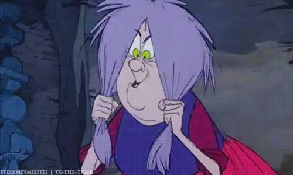

Aqui almacenamos las tareas que has realizado diariamente
Tambien hablamos de las que queremos hacer mañana.
Este texto tiene en cuenta el espaciado
y
los cambios de linea porque no es "p" es "pre".

Vale, vamos a probar los tipos de texto, empezamos con negrita, ¿funciona?
Vale. Seguimos con italic que significa cursiva. Ahora vamos con exponentes rolloaqui arriba
Y tambien podemos ponerloaqui abajo jaja. Podemos tacharlo, subrayarlo con subrayador
y tambien con una rayita por debajo, maravilloso.
Este es muy divertido, altera como en un espejoespejo Stand for bi-directional override
Estamos de acuerdo en que no vamos a utilizarlo en la vida xD.
Usando el selector de color en RGBA permite manipular canal alpha, ¡transparencias!
Accede al glosario de etiquetas
 Con el style FLOAT puedes dejar la imagen al lado que quieras de un bloque de texto Esta es Madam Mim riendose de Arturo que se ha convertido en un pequeño pajarito y está cagado de miedo.